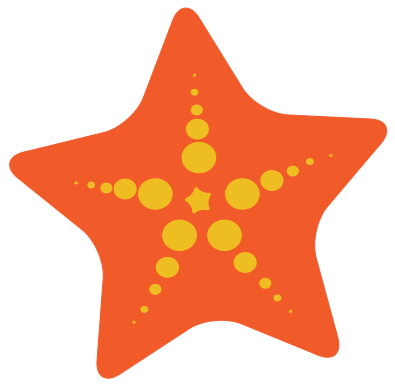

O QUE É A EUREKA INSIGHTS?
A Eureka Insights é uma organização sem fins lucrativos que tem como objetivo principal a preservação dos oceanos. Acreditamos que a preservação dos oceanos é essencial para a sobrevivência do planeta e de todos os seres vivos que nele habitam. Por isso, trabalhamos para conscientizar as pessoas sobre a importância dos oceanos e promover ações que contribuam para a sua preservação.
NOSSA MISSÃO
Dramatic Rescue of Sea Lions From Plastic do Aquário de Vancouver
Cada onda que beija a costa, cada brisa salgada que acaricia nossos
rostos, nos lembra da responsabilidade que compartilhamos como
guardiões deste vasto e precioso ecossistema. Nosso compromisso é
claro: educar, inspirar e agir. Através de programas de
conscientização, pesquisa científica e parcerias colaborativas,
buscamos despertar o mundo para a urgência e a importância da
preservação dos oceanos.
Juntos, como uma comunidade global unida pela maré, podemos criar um
futuro onde os oceanos permaneçam vivos e vibrantes, onde a beleza
incomparável de seus recifes de coral, a majestade de suas criaturas
marinhas e a abundância de sua vida subaquática continuem a inspirar e
nutrir as gerações futuras.
Com cada projeto, buscamos envolver e capacitar comunidades locais,
oferecendo educação ambiental e promovendo a participação ativa na
conservação marinha. Acreditamos que, ao equipar as pessoas com o
conhecimento e as ferramentas necessárias, podemos fomentar uma
mudança duradoura e significativa. Nossos programas de
conscientização são projetados para destacar a importância dos
oceanos e incentivar comportamentos sustentáveis, desde a redução do
uso de plásticos até a promoção de práticas de pesca sustentável.
A pesquisa científica é um pilar fundamental de nossos esforços.
Investimos em estudos que aprofundam nosso entendimento sobre os
impactos das mudanças climáticas, a acidificação dos oceanos e
outras ameaças emergentes. Esses dados são essenciais para
desenvolver estratégias eficazes de mitigação e adaptação que
protejam a biodiversidade marinha e garantam a resiliência dos
ecossistemas oceânicos. Parcerias colaborativas são a chave para
ampliar nosso impacto. Trabalhamos com governos, empresas, outras
ONGs e instituições de pesquisa para promover políticas públicas
robustas e iniciativas de conservação de grande escala. Acreditamos
que a união de forças é essencial para enfrentar os desafios globais
que ameaçam os oceanos e garantir um futuro sustentável para todos.
Em suma, nossa missão é inspirar ações positivas e
concretas que protejam e preservem os oceanos. Sabemos que cada
esforço conta, e juntos podemos fazer a diferença. Convidamos todos
a se juntar a nós nesta jornada, seja através de apoio financeiro,
voluntariado ou simplesmente adotando práticas mais sustentáveis em
suas vidas diárias. Unidos pela maré, podemos garantir que os
oceanos continuem a ser uma fonte de vida e inspiração para gerações
futuras.